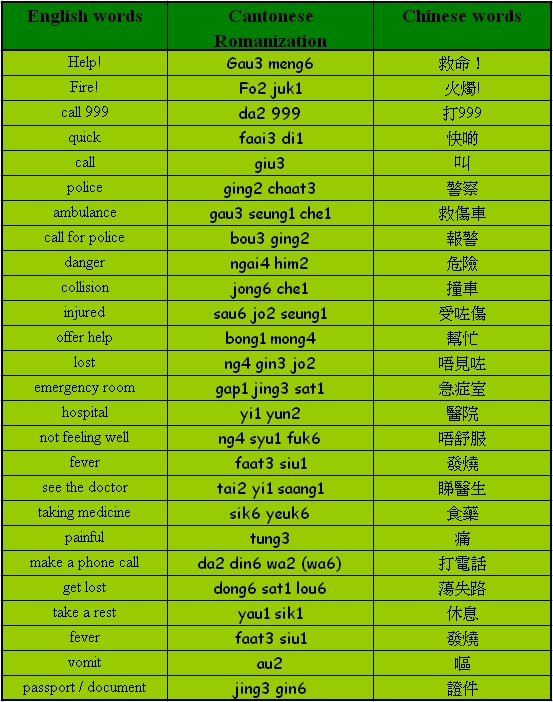

Unit 11 Emergency
Unit 11 Emergency 
Objectives
- To recognize and pronounce Cantonese words with the initials [b], [d], [s], [y], [ch];
- To recognize and pronounce Cantonese words with the finals [i], [ap], [at], [aat], [aak];
- To use simple Cantonese vocabulary and expressions in emergencies.

Warm up Work together.
- Do you know the name of the Government department which is responsible for education in Hong Kong?
- Can you use Cantonese to remind your partner to do their revision at home?
Vocabularies

Sentence structure
Verb – Object construction (S V O)
I’m going to hand in my assignment.
我去交功課。
[ngo5 heui3 gaau1 gung1 fo3.]
I’m going to see the doctor.
我去睇醫生。
[ngo5 heui3 tai2 yi1 saang1.]
I’ll call the ambulance.
我打電話叫救傷車。
[ngo5 da2 din6 wa2 giu3 gau3 seung1 che1.]
Conversation Practice with a partner.
Scene: Sally is not feeling well and Linda is helping out.
Linda: I am going to the faculty office to hand in my assignment. Can we go together?
我去學系辦公室交功課，不如一齊吖？
[ngo5 heui3 hok6 hai6 baan6 gung1 sat1 gaau1 gung1 fo3, bat1 yu4 yat1 chai4 a1? ]
Sally: I don’t think I can join you because I am not feeling well.
我唔去喇，因為我唔舒服。
[ngo5 ng4 heui3 la3, yan1 wai6 ngo5 ng4 syu1 fuk6.]
Linda: What’s wrong?
有咩問題？
[yau5 me1 man6 tai4]
Sally: I feel hot and my tummy hurts.
我發高燒同肚痛
[ngo5 faat3 siu1 tung4 tou5 tung3]
Linda: Oh, you have got a high fever and tummy ache. Do I need to call the ambulance?
噢！你發高燒同肚痛，使唔使叫救護車呀？
[o1! nei5 faat3 gou1 siu1 tung4 tou5 tung3, sai2 m4 sai2 giu3 gau3 seung1 che1 a3?]
Sally: I’ll take a rest and then go to see the doctor.
我會休息一陣，然後去睇醫生。
[ngo5 wui5 yau1 sik1 yat1 jan6, yin4 hau6 heui3 tai2 yi1 saang1.]
Linda: Okay, phone me if you need any help.
好啦，你需要幫忙就打電話俾我喇。
[hou2 la1, nei5 seui1 yiu3 bong1 mong4 jau6 da2 din6 wa6 bei2 ngo5 la3.]
Quiz
- What number you have to dial if you want to call the police in Hong Kong?
- If you ‘dong6 sat1 lou6’, what would you do?